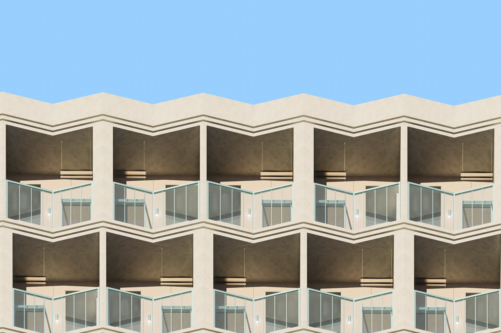
SPARE ROOM
- Location
- 서울 성동구 사근동 · 구 덕수고 부지
- Year
- 2023
- Type
- 공공 실험 집합주거 · 학교 리노베이션
- Status
- 3학년 2학기 설계스튜디오
- Team
- 개인
함께 외로운 도시인들의 집
사근동은 청년 1인가구가 대부분이고, 4.5평 원룸은 화장실과 침대만 남기고 나머지 삶을 밀어냈다. 문 닫은 학교를 공공이 짓는 실험 집합주거로 바꾼다. 방은 잠과 씻기만 남기고, 부엌·빨래·서재 같은 나머지 삶은 공용부로 되돌린다. 모이라고 강제하지 않는다. 빛과 온기, 반쯤 내 것인 브릿지가 사람들을 방 밖으로 끌어낸다.
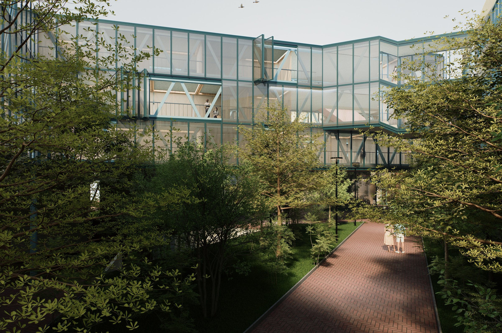
원룸이 밀어낸 삶을 공용으로 되돌린다Giving back what the one-room pushed out
사근동은 청년 1인가구가 73–80%에 이른다. 쪼개진 4.5평 원룸에는 침대와 화장실만 남고 부엌 · 빨래 · 거실은 밀려났으며, 대부분 2년을 채우지 못하고 떠난다. 폐교된 구 덕수고에 공공이 짓는 실험 집합주거를 넣는다. 방에는 잠과 화장실만 두고, 원룸이 담지 못한 삶을 공용으로 되돌린다.
매스 전략Massing
기존 학교의 라멘 골조는 남기고, 정문 쪽만 열어 외부인도 드는 공용부로 바꾼다. 떨어진 두 동은 대각 브릿지로 잇고, 브릿지가 내려앉는 자리에 같은 각도의 매스를 끼워 동선을 받는다.
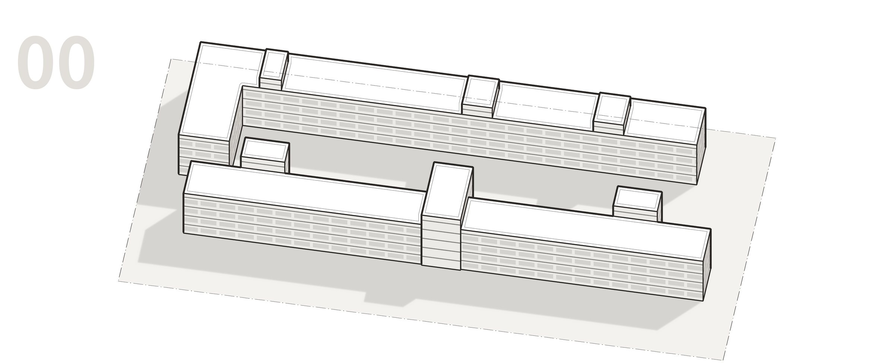
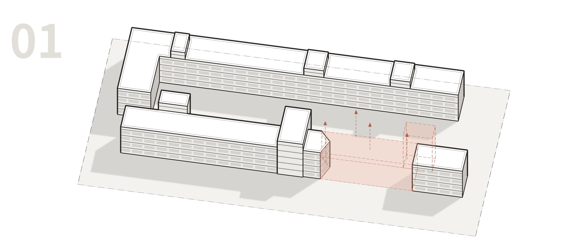
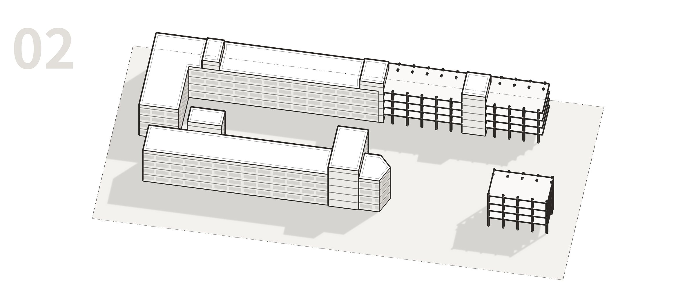
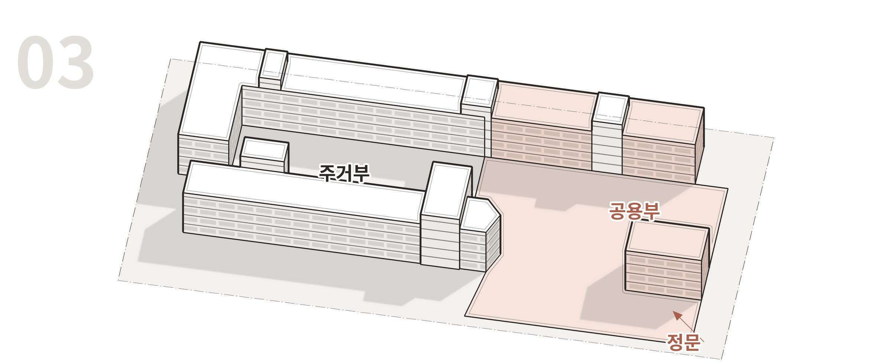
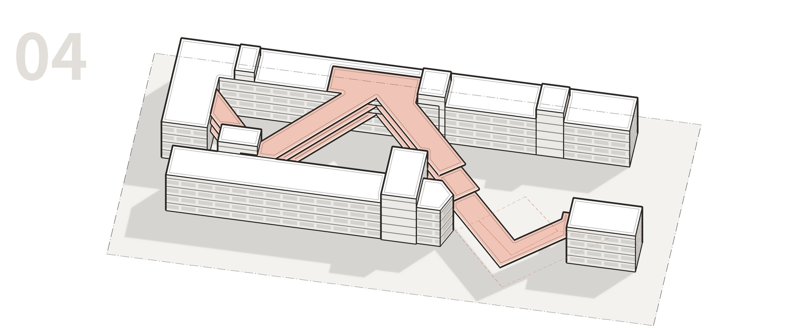
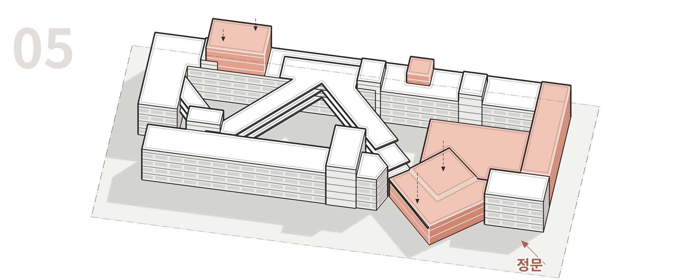
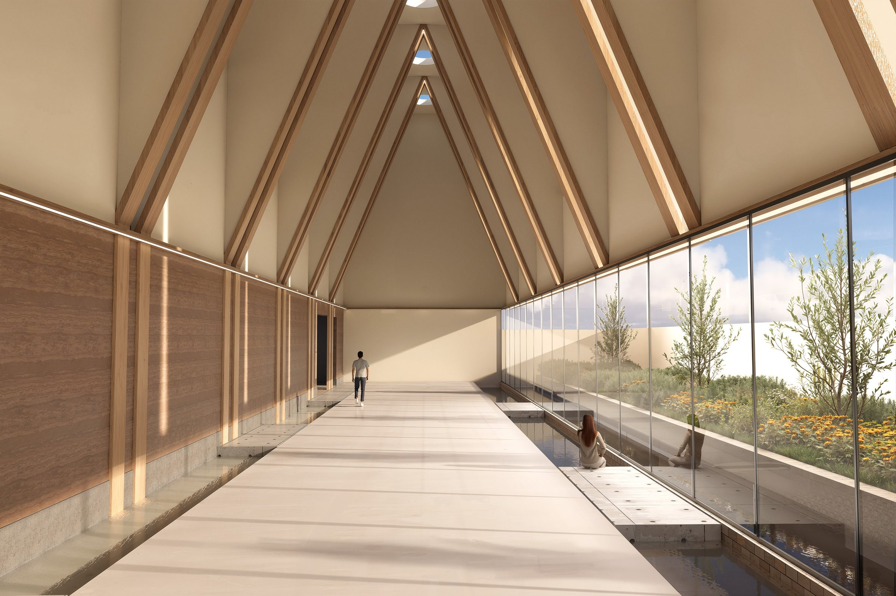
대각 매스가 학교의 두 동을 가로지른다
교실 두 칸의 대각선(46.6°)을 따라 새 매스를 끼워 공용부와 주거부를 나눴다. 정문 쪽 밝은 공용부에서 안쪽 주거로 갈수록 조용하고 어두워진다.
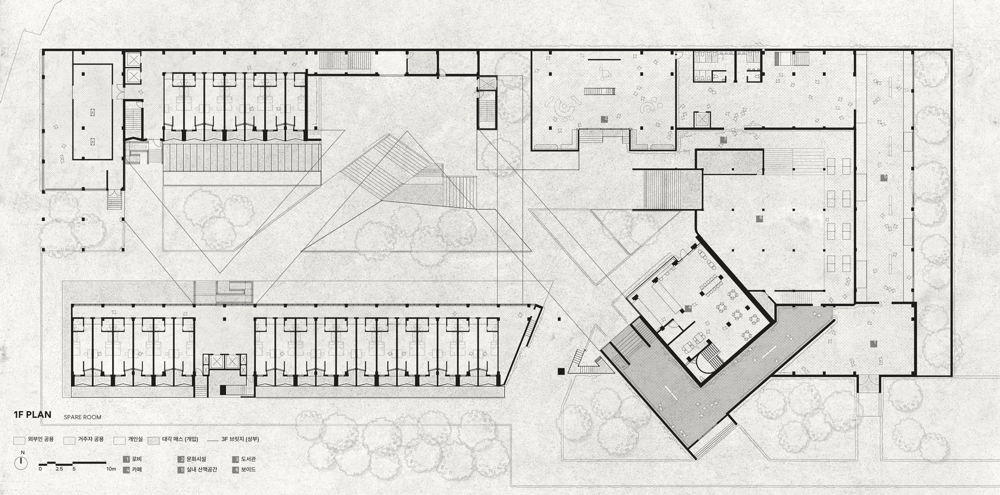
8m 브릿지는 방 밖의 두 번째 거실이다
주거부와 공용부를 잇는 8m 폭 브릿지는 거주자만 쓰는 확장 거실이다. 방과 라운지 사이에 없던 중간층이 되어, 책을 읽고 일하며 중정을 내려다본다.
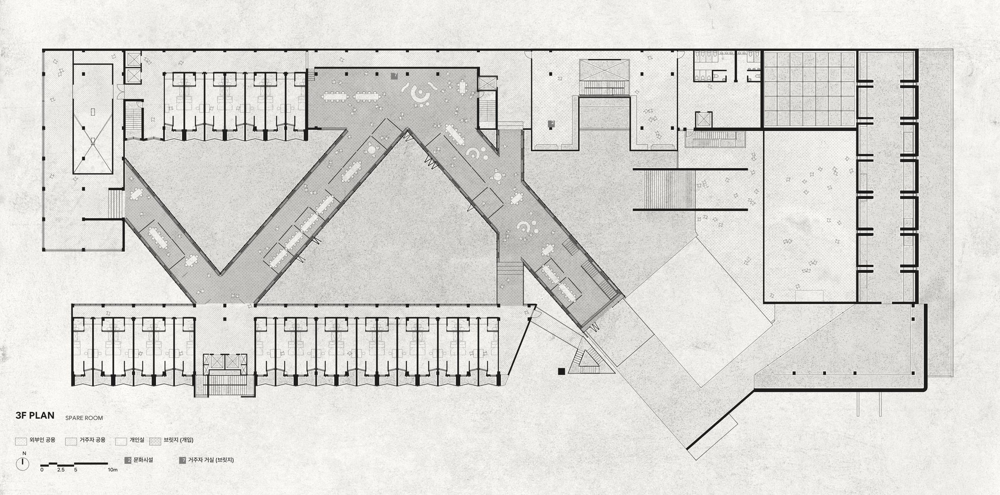
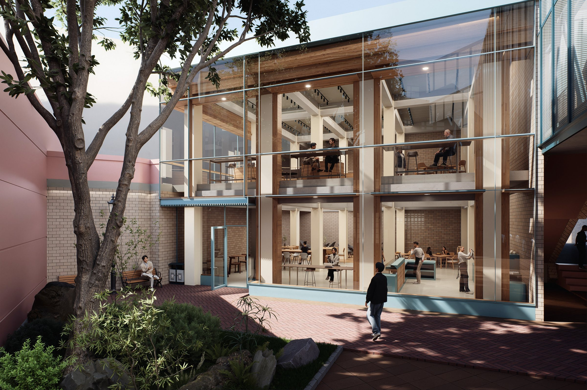
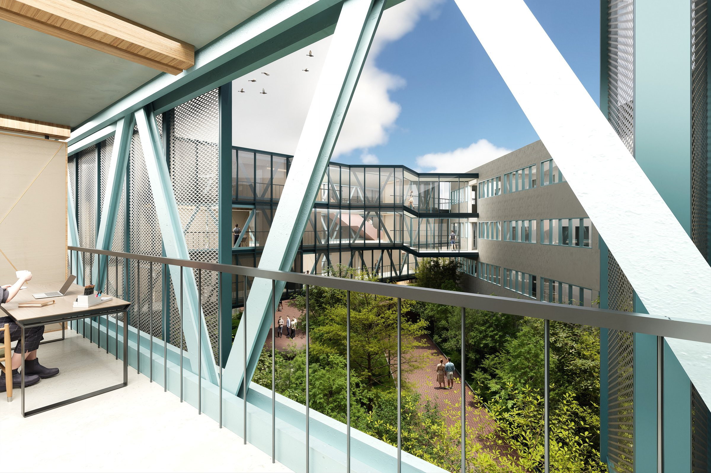
방에는 잠과 화장실만
폭 3,000 · 깊이 8,000. 기둥 베이 두 칸(9,000)에 세 세대가 든다. 부엌 · 빨래 · 거실은 방에 두지 않는다.
1 발코니 1,500 캔틸레버 · 2 밝은 존 — 잠 · 생활 · 3 어두운 존 — 현관 · 화장실 · 수납 · 4 편복도 2,000
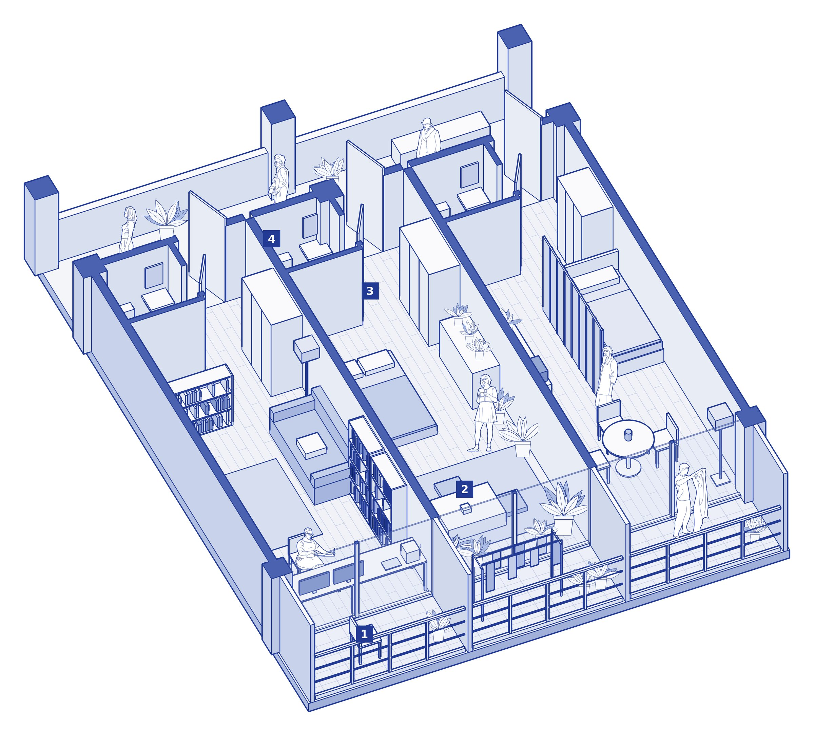
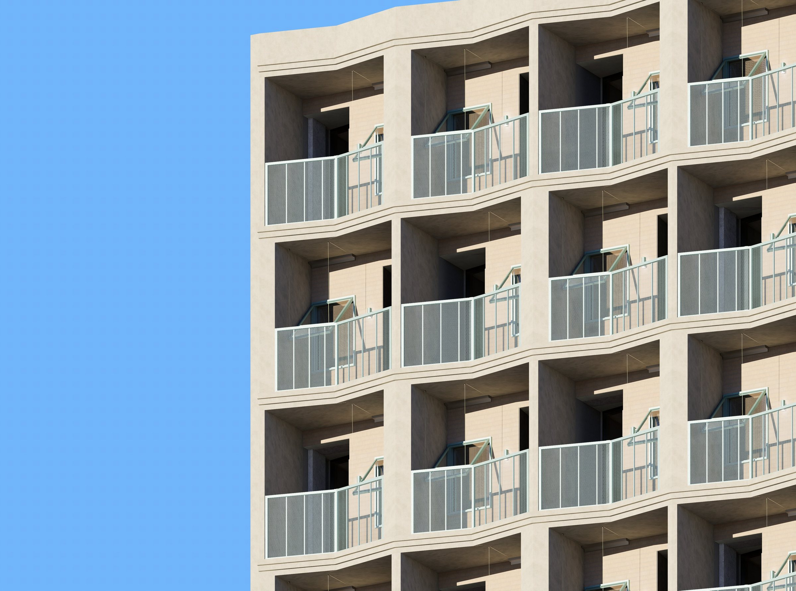
강제하지 않고, 빛과 온기로 모은다
같이 밥을 먹으라고 강제하지 않는다. 공용부의 빛과 온기가 방보다 나아야 사람들이 스스로 나온다. 브릿지와 중정, 천창은 그 끌림을 만드는 장치다.
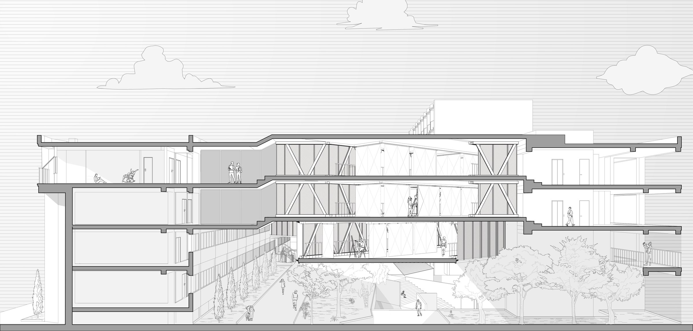